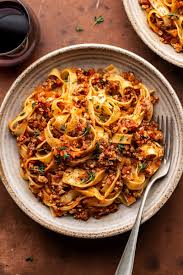

Vegan Mushroom Bolognese
Description
Try this hearty and flavorful vegan alternative to the traditional Italian Bolognese sauce. It's perfect for serving over your favorite pasta, polenta, or even zucchini noodles.
Ingredients
- 2 tablespoons olive oil
- 1 onion, chopped
- 1 medium carrot, diced
- 1 celery stalk, diced
- 2 cloves garlic, minced
- 2 cups button mushrooms, quartered
- 1 cup red wine
- 1 (14.5 ounce) can whole peeled tomatoes
- 1 tablespoon salt
- 1 teaspoon ground black pepper
- ½ teaspoon dried sage
- 3 bay leaves
- ½ teaspoon basil
Steps
- Heat olive oil in a skillet over medium heat; stir in onion. Cook and stir until the onion has softened and turned translucent, about 5 minutes. Add carrot, celery, and garlic; cook until soft, about 3 minutes. Add mushrooms; cook until tender, about 3 minutes. Pour in red wine; cook until wine has almost evaporated, about 3 minutes.
- Add tomatoes and season with salt, black pepper, sage, and bay leaves. Cook over medium-high heat and bring to a boil. Reduce heat to low and simmer, covered, about 20 minutes. Remove bay leaves and stir in basil.